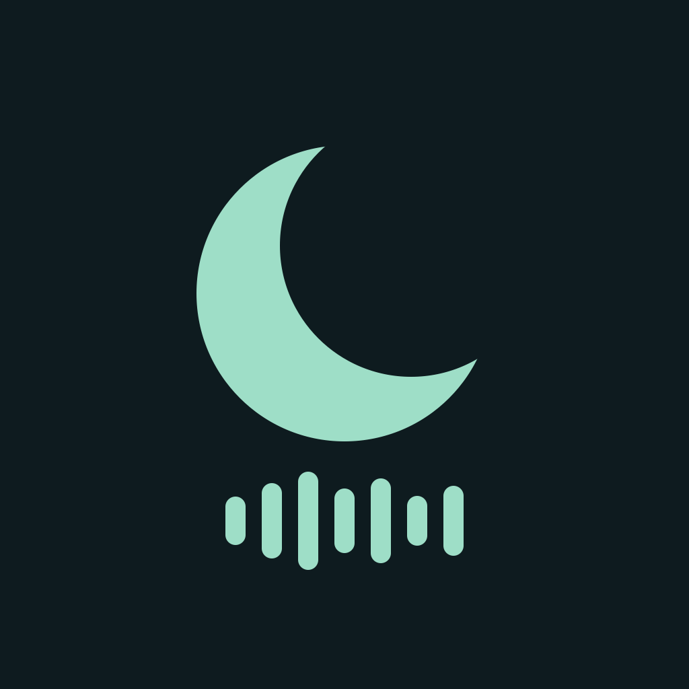

In a few minutes. Or every week.
Choose a delay for now, or save weekdays and a time for a recurring schedule.

Nap & Stay AwakeNap & Stay Awake
After settling the little one. At the end of a short rest. A vibration alarm signals that it is time to move on.
A quiet cue for your next moment.
Everyday cues
Choose a delay for now, or save weekdays and a time for a recurring schedule.
Mix notification-style and longer patterns. Custom patterns play while the app stays in the foreground.
Calculation, number taps, a long press or repeated taps can guide you through dismissing or snoozing.
Quiet by design
Adjust the clock and text brightness, or let the display go black. Ads stay off the Alarm tab, Night screen and active alarm screens.
Premium plans
Choose a monthly subscription or a one-time Premium purchase to remove ads and unlocks advanced reminder counts and intervals, dismiss steps and vibration settings. Your store shows the current price.
Keep the app open in the foreground with the Night screen. Locking the device or switching apps returns vibration control to the OS. The black Night screen display is different from switching off or locking the device.
Current requirements: iPhone with iOS 26.1 or later, or Android 8.0 or later. The app interface supports 20 languages, including English and Japanese. Behavior depends on the device, OS and permissions. Alarm delivery and waking are not guaranteed.
Compatibility and frequently asked questions